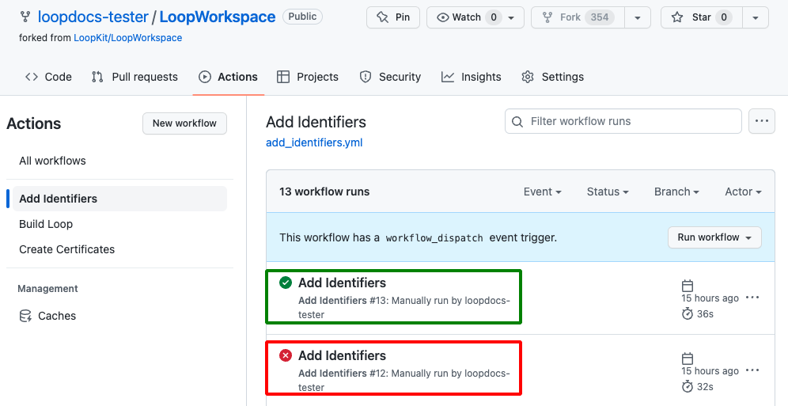
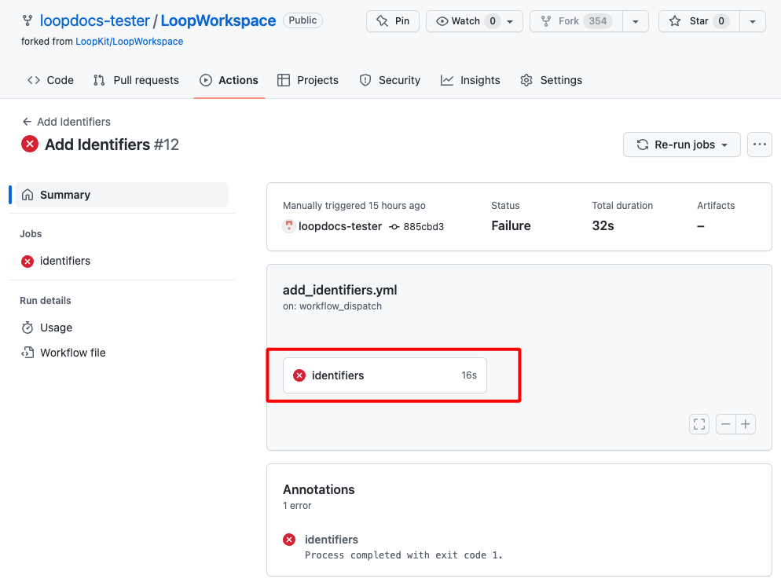
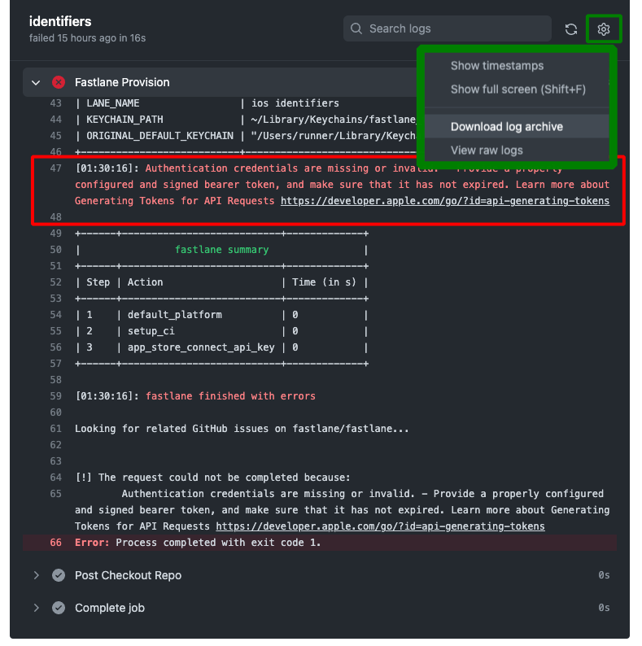
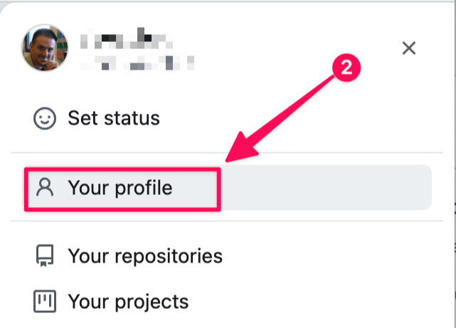
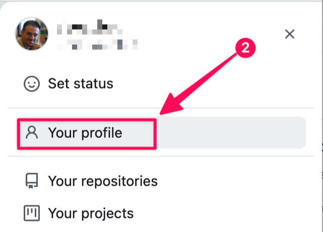
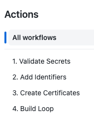
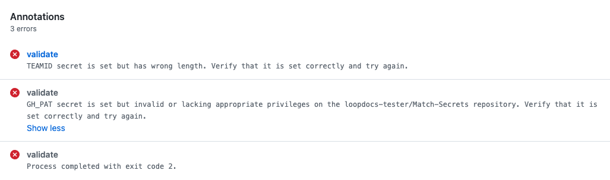
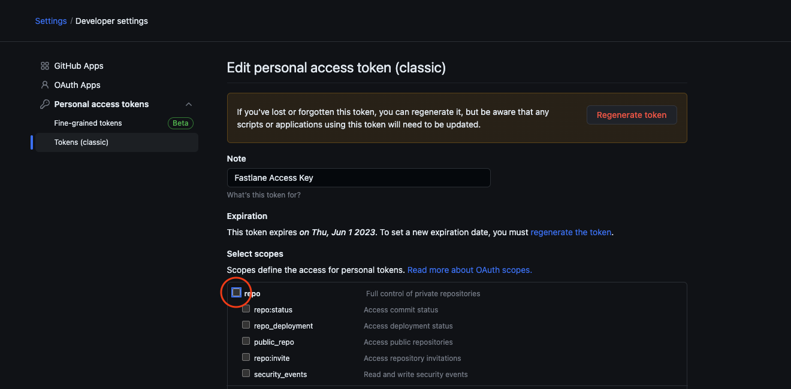
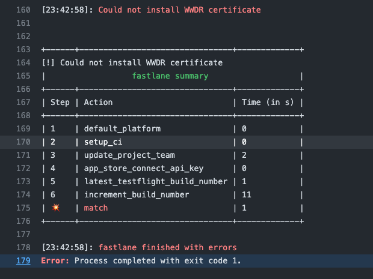

GitHub Errors
GitHub Build Method Errors¶
This method is fairly new so new errors are being captured as people use this method. Each time a new error is discovered, we try to update LoopDocs to make it easier for the next person to succeed without errors.
If you've been around Loop for a while, you know the mantra about screenshots. Well, for GitHub Build Action failures, screenshots are close to useless. If you get an error with a GitHub Action, you should use the search feature for known diagnosis strings. If you are still stuck, then post your request for help along with your GitHub username. Mentors can go to your public LoopWorkspace fork - check that your branch is up to date and then view your GitHub Action log files directly.
But first - try to diagnose it yourself using this page.
Most Common Mistakes¶
These are some of the most common errors to date.
- Make a spelling error when adding Secrets
- Each secret must be spelled exactly the way it is presented in the instructions
- Save your Secrets, as directed, but use a smart editor instead of a text-only editor
- It only takes one letter to be changed from lower-case to upper-case by your smart editor to ruin your day
- The alpha-numeric values used for
GH_PAT,FASTLANE_ISSUER_IDandFASTLANE_KEYcontain both upper and lower-case characters and all the values are case-sensitive
- When entering
TEAMID, make a spelling error in the value - please copy and paste instead of typing what you think you see- If you type in your
TEAMIDas0123498989when it is really012349B989, you may not notice- Hint: what should have been the letter
B, got typed as the number8
- Hint: what should have been the letter
- The incorrect
TEAMIDwill show up in your identifiers as theBundle IDbut . . .- You will not be able to
Create CertificatesorBuild Loopbecause yourTEAMIDdoes not match theBundle ID
- You will not be able to
- If you type in your
- Run the actions out of order or skip one
Find Your Error¶
There is a separate section for each step in the process. First, you must follow the Examine the Error instructions to view the record of the failed action. Then go to the section for the Action you were trying to complete to look for possible error strings to copy into the search box.
- Action:
Verify Secrets - Action:
Add IdentifiersErrors - Action:
Create CertificatesErrors - Action:
Build LoopErrors before a successful build - Repeat
Build LoopErrors after a successful build
If you discover a new error, please reach out to help us update the documentation.
Examine the Error¶
It doesn't matter which action you are running; after the action completes, you will either see a green check mark for success or a red x mark for failure. The graphic below shows an example for the Add Identifiers action.

If you click on the action name, it opens a secondary screen as shown below.

Click on the top link to view the record of the failed action as shown in the graphic below. You will be pasting strings into the search box (highlighted with a green rectangle) to look for a documented error. Please read the instructions below the graphic.

- Paste in a possible error string (copy it exactly); repeat until you find a match
- If the possible error string is found - follow the directions for that error
- Still stuck?
- Post for help including your GitHub username
- With that, mentors can diagnose your problem - or at least make a good guess at what you need to try
- Please do NOT post a screenshot
Where to find my GitHub username?
You can find it:
- either in the URL of your fork of
Loopworkspace, aftergithub.comin between the forward slashes (/).
https://github.com/username/Loopworkspace -
or on the GitHub website
 

As your GitHub username is case-sensitive, use copy and paste.
Action: Verify Secrets Errors¶
A new action was added with Loop 3.1 to provide better error messages if something is wrong with your Secrets. In addition, the Actions are numbered to match the order in which they should be applied.

To generate the graphic below, some items were deliberately set to be incorrect in the Secrets list. Representative error messages are shown when running the validate secrets action.

Action: Add Identifiers Errors¶
Use the Examine the Error instructions to find your error message.
There are two errors that we are familiar with at this point. Look for text matching what is listed below and view what has caused this error to be seen.
Authentication credentials are missing or invalid¶
If you see:
Authentication credentials are missing or invalid. - Provide a properly configured and signed bearer token, and make sure that it has not expired. Learn more about Generating Tokens for API Requests https://developer.apple.com/go/?id=api-generating-tokens`
This can be caused by an error in the value (or spelling) of one of these keys:
FASTLANE_ISSUER_IDFASTLANE_KEY_IDFASTLANE_KEYGH_PAT
Use a Text-Only Editor
If you used a "smart" editor when saving your Secrets in an archive file before pasting them into the repository Secrets, it might have changed a lowercase letter to an uppercase letter.
If even one character is capitalized when it should not be, you will not succeed at the Add Identifiers step.
Invalid curve name¶
If you see:
invalid curve name
This was caused by an error in the format of the value entered for the FASTLANE_KEY.
Make sure you copy in a text editor from the first hyphen to the last hyphen.
Action: Create Certificates Errors¶
Use the Examine the Error instructions to find your error message.
Wrong TEAMID in Secrets¶
Copy the words on the line below and paste them into the search function for your text editor.
error: No profile for team '***' matching 'match AppStore
If that phrase is found, then:
- You probably do not have the correct
TEAMIDentered in yourSecrets - The rest of these instructions assume:
- You have already created a Loop App in the App Store with that incorrect
TEAMID - This is true if you completed the steps after running Action:
Add Identifiersand before Action:Create Certificates
- You have already created a Loop App in the App Store with that incorrect
Follow these steps:
Open each link below in a separate tab
It is best to open each link below in a separate tab so you can return to this list and keep using the links in each step.
-
Delete all the identifiers that you can, following the steps in First Time: Delete Identifiers
- You will not be able to delete the Loop identifier with the wrong
TEAMID, but don't worry about it
- You will not be able to delete the Loop identifier with the wrong
-
Enter your
TEAMIDcorrectly in the repositorySecrets- Make sure you use copy and paste from your Apple Developer Membership page for that
TEAMID. - Follow the update instructions here (this example is for
GH_PAT, you'll do the same but forTEAMID) Update Secrets
- Make sure you use copy and paste from your Apple Developer Membership page for that
-
Run Action: First Time:
Add Identifiersagain -
Follow all the steps in this section with the correct
TEAMIDFirst Time: Configure Identifiers for Loop but when you get to the First Time: Create Loop App in App Store Connect, you need to return to this page and follow the instructions below to remove the app and add a new one.
The first time through, you created an app with a Bundle ID that does NOT include your TEAMID.
You will remove that app and create a new one.
Remove App with Incorrect TEAMID¶
Go to App Store Connect / Apps and follow the numbered steps in the graphic below.
- Find the Loop app you created earlier and click on it
- On the left side, under
General, click onApp Information- Confirm that the value listed under
Bundle IDis the incorrect one - The
Bundle IDsays:com.NOT_YOUR_TEAMID.loopkit.Loop
- Confirm that the value listed under
- Scroll to the bottom of the page and tap on
Remove App - The dialog box, similar to the one in the graphic below, should appear and you tap
Remove- After the App is removed, you'll see a very similar screen, where you can tap on
Restore App
- After the App is removed, you'll see a very similar screen, where you can tap on
- But since you want that App removed, tap on
Appsat the very top of the screen and proceed to the next step

That App with the wrong Bundle ID remains in the App store but it is hidden so it won't confuse you.
Add App with Correct TEAMID¶
Now click on the Add Apps button or the  (plus sign) if you have other apps in the App Store.
(plus sign) if you have other apps in the App Store.
Follow the First Time: Create Loop App in App Store Connect directions with these additions:
- You must come up with a new name for your Loop App
- Triple-check that the
Bundle IDyou choose is for Loop and contains yourTEAMID, it should look like:com.TEAMID.loopkit.Loop - You must come up with a new
SKUfor your Loop App (try1234, if you used123before)
Create Certificates¶
You should be able to continue with the First Time Steps to Create Certificates and then Build Loop and keep going.
Missing Repository Access¶
Copy the words on the line below and paste them into the search function for your text editor.
Error cloning certificates git repo, please make sure you have access to the repository - see instructions above
or
Error cloning certificates repo, please make sure you have read access to the repository you want to use
If you see this phrase, the fastlane package that is utilized during the 3. Create Certificates action cannot access your repository to create certificates for your Loop app. This is due to insufficient repository access rights that were not granted during the creation of your GH_PAT token.
To fix this error:
- Open this link: https://github.com/settings/tokens/
- Here you will see your personal access token (
Fastlane Access Token) that was created during First Time: Setup GitHub: Create GH_PAT - Note that
Tokens (classic)is highlighted in the menu on the left - Click on the token name (should be bold, blue
Fastlane Access Token) to open its detail page - None of the checkboxes under
Select Scopeswill be checked – this is what's causing the issue. - Add a check beside the
repopermission scope (see the red circled checkbox in the graphic) - Scroll all the way to the bottom and click
Update token(it's a long way, ignore all other settings, do not check anything else)

After you have clicked Update token you should see the token overview again with the message Some of the scopes you’ve selected are included in other scopes. Only the minimum set of necessary scopes has been saved. (You can dismiss the message using the X near the upper right side if it appears).
Create Certificates¶
You should be able to continue with the First Time Steps to Create Certificates and then proceed from there with Build Loop and keep going.
Action: Build Loop Errors¶
Run Create Certificates First
You must run Action: Create Certificates before attempting to run Action: Build Loop
- Download the log archive file and unzip it
- Open the
1_build.txtfile - Search for the phrase below
For each Build Loop Error section below, copy the phrase into the search function of your text editor. If you find it, solve that error. If not, move on to the next one.
Could not find an app on App Store Connect¶
Copy the words on the line below and paste them into the search function for your text editor.
Could not find an app on App Store Connect
If that phrase is found, then:
-
Make sure you completed the Create Loop App in App Store Connect Step
- Once you've resolved that step, run these Actions again:
Create CertificatesBuild Loop
- Once you've resolved that step, run these Actions again:
-
This can also be caused if you correctly created the Loop App but entered an incorrect value for the
TEAMID.- If you have the incorrect
TEAMID, check this link: Certificates, Identifiers & Profiles for entries with the incorrectTEAMIDembedded - For example, if your
TEAMIDis0123456789, but you entered000123, you may see both of these in your identifiers listcom.0123456789.loopkit.Loopcom.000123.loopkit.Loop
- Delete the "bogus" identifier version, fix your
TEAMIDand rerun all three steps:Add IdentifierCreate CertificatesBuild Loop
- If you have the incorrect
Error: Provisioning Profile¶
Copy the words on the line below and paste them into the search function for your text editor.
error: Provisioning profile "match AppStore
If that phrase is found one, or more times, it means you missed a step when configuring the Loop identifier or missed associating your Loop App Group with one or more identifiers.
For example, if you see:
error: Provisioning profile "match AppStore com.***.loopkit.Loop" doesn't include the com.apple.developer.usernotifications.time-sensitive entitlement.
Go back to First-Time: Add or Review Configuration for Loop Identifier and make sure you enabled the Time-Sensitive notification for Loop.
For example, you might see:
error: Provisioning profile "match AppStore com.***.loopkit.Loop.SmallStatusWidgeterror: Provisioning profile "match AppStore com.***.loopkit.Loop.statuswidgeterror: Provisioning profile "match AppStore com.***.loopkit.Loop.Loop-Intent-Extension
Return to Add App Group to Other Identifiers and fix the missing items.
You must create certificates again before you can build Loop:
- Action:
Create Certificates - Action:
Build Loop
A new one cannot be created because you enabled¶
Copy the words on the line below and paste them into the search function for your text editor.
A new one cannot be created because you enabled
If that phrase is found with lines similar to the following:
[31mA new one cannot be created because you enabled `readonly`[0m
[31mProvisioning profiles in your repo for type `appstore`:[0m
[31m- 'AppStore_com.NOT_YOUR_TEAMID.loopkit.Loop.statuswidget.mobileprovision'[0m
[31m- 'AppStore_com.NOT_YOUR_TEAMID.loopkit.Loop.SmallStatusWidget.mobileprovision'[0m
[31m- 'AppStore_com.NOT_YOUR_TEAMID.loopkit.Loop.mobileprovision'[0m
[31m- 'AppStore_com.NOT_YOUR_TEAMID.loopkit.Loop.LoopWatch.mobileprovision'[0m
[31m- 'AppStore_com.NOT_YOUR_TEAMID.loopkit.Loop.Loop-Intent-Extension.mobileprovision'[0m
[31m- 'AppStore_com.NOT_YOUR_TEAMID.loopkit.Loop.LoopWatch.watchkitextension.mobileprovision'[0m
This tells you, the Bundle ID you selected in First-Time: Create Loop App in App Store Connect does NOT have your TEAMID embedded in the name.
Once you have created an app in the App Store that is not based on your TEAMID, you cannot delete it, but you can Remove it (i.e. hide it so that it is no longer visible on this page and you don't accidentally click on it).
- Open this link: App Store Connect / Apps to view your apps; log in if needed.
- Find the App with the wrong
Bundle IDand click on it - On the left-hand side, click on
App Information(underGeneral)- Confirm the
Bundle IDlisted does not include yourTEAMID - Scroll all the way to the bottom
- Tap on
Remove App - New dialog window appears, select
Remove
- Confirm the
At this point, get your correct TEAMID, fix your Secrets file to have the correct TEAMID and then return to First-Time: Configure Secrets. This time you will be updating TEAMID in the repository secret list.
Repeat Build Loop Errors¶
This section is only for people who have successfully built using GitHub Build Actions.
Use the Examine the Error instructions to find your error message.
Could not install WWDR certificate¶
Assuming you have successfully built using the Browser-Build / GitHub method before:
- If the details show this message,
Could not install WWDR certificate, make sure your Apple developer account is in good standing and that there are no agreements that need to be accepted - Sometimes this is a sign that Apple did not respond to a request, this failure happens in the first few minutes
- Repeat the build and it should be fine the next time

Starting Over¶
This is not the first thing to try, but sometimes it is the best approach.
Totally Frustrated
The directions on the GitHub First Time page have been improved.
If you tried this earlier and did not make progress, you can delete the Match-Secrets repository and LoopWorkspace fork in your GitHub account. Make sure your Secrets are all correct and consistent, then start over at First-Time: Create Match-Secrets and keep going. It will go much faster this time.
- Instructions to delete a repository are found at GitHub Docs